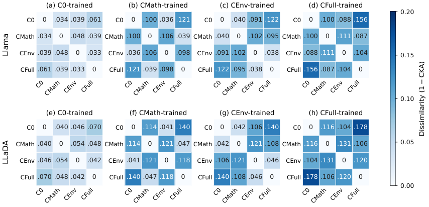

Builds a 129,826-problem Lean whole-proof generation benchmark from a Mathlib4 snapshot and verifies generated proofs in the original Lean environment.
Abstract
Neural theorem proving increasingly uses retrieved premises and project context to support proof generation. Evaluating these resources requires measuring the advantage of target-selected declarations over comparable alternatives and how this advantage depends on training. We introduce LeanContext, a benchmark of 129,826 Lean whole-proof generation problems, to investigate these questions. We group selected complete preceding mathematical declarations as Mathematical Context (MC) and the remaining selected local source commands as Environment Context (EC). Four aligned input views support crossed training and inference evaluations with shared targets and original Lean verification environments. For both diffusion- and autoregressive-based models, selected declarations outperform comparable alternatives by a larger margin when training includes MC. Final-input audits identify omitted declarations referenced by the target. Prioritizing these dependencies improves Pass@32 by 1.40% and 1.70% for LLaDA and Llama, respectively, on 2,000 targets. The selection experiment operates without access to target reference proofs and holds checkpoints, EC, and inference budgets constant. The code and dataset are available at https://github.com/haaaardcvZ/LeanContext.
Problem
Neural provers increasingly draw on retrieved premises and project context. It is unclear how much target-selected mathematical declarations help compared with comparable alternatives, and how that benefit depends on training.
Approach
LeanContext splits the preceding source context into Mathematical Context (MC: definitions, lemmas, structures, classes, instances) and Environment Context (EC: variable, namespace, open, notation commands). It provides four aligned input views (C0, CMath, CEnv, CFull) for crossed training and inference experiments with LLaDA-8B and Llama-3.1-8B. Proofs are sampled 32 times per target and checked at their original locations in Lean. Matched-replacement and dependency-coverage audits measure what selected declarations contribute.
Results
Checkpoints trained with MC gain more from supplied declarations: CFull training reaches 48.7% (LLaDA) and 49.6% (Llama) Pass@32. Selected declarations beat matched replacements by up to 7.2 points. A dependency-prioritizing selection policy raises Pass@32 by 1.40 (LLaDA) and 1.70 (Llama) points on 2,000 targets without using reference proofs.

Figure 3: Block-32 representation dissimilarity on 4,000 shared test targets under reference-proof conditioning. Rows identify backbones, and columns identify training views. Both axes within each panel are inference views. Cells report 1-\mathrm{CKA} with a shared color scale. Larger values indicate lower representation similarity.
Model
C0
CMath
CEnv
CFull
LLaDA (CFull train)
31.2
40.1
41.6
48.7
Llama (CFull train)
32.8
41.8
41.1
49.6
Pass@32 (%) on 11,064 targets for CFull-trained checkpoints across inference views
Model
Policy
Pass@1
Pass@32
Coverage
LLaDA
Baseline
5.94
43.90
47.70
LLaDA
Priority
6.17
45.30
72.26
Llama
Baseline
6.25
44.55
48.88
Llama
Priority
6.53
46.25
73.48
Dependency-priority selection policy vs baseline on 2,000 targets